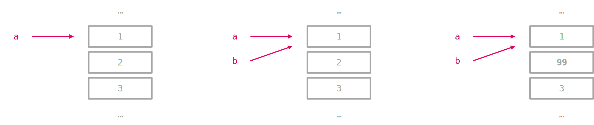

2.2 Sequentielle Datentypen#
Sämtliche Datentypen dieses Abschnitts haben die Eigenschaft, dass deren Elemente fortlaufend, also sequentiell, angeordnet sind. Der Datentyp besteht dabei aus mehreren Elementen, die gelesen und je nach Datentyp manipuliert werden können. Einzelne oder mehrere Elemente eines sequentiellen Datentyps werden mit den eckigen Klammern [] angesprochen.
2.2.1 Liste (list) & Tupel (tuple)#
→ mehr zu Listen & Tupel
Liste (list)#
Listen bestehen aus einer Sequenz von beliebigen und veränderbaren Objekten. Listen können andere Listen enthalten. Dann spricht man von verschachtelten Listen. Auf die einzelnen Objekte kann analog zu den Zeichenketten zugegriffen werden.
liste = [-3, 4.56, [56, 4+6j, True], 'String']
print(liste)
print(type(liste))
[-3, 4.56, [56, (4+6j), True], 'String']
<class 'list'>
Tupel (tuple)#
Tupel unterscheiden sich äusserlich von Listen nur durch die () anstelle der []. Wie Listen können sie ebenfalls verschachtelt werden. Der grosse Unterschied liegt in der Unveränderbarkeit von Tupeln (siehe weiter unten).
tup = (-3, 4.56, (56, 4+6j, True), 'String')
print(tup, type(tup))
(-3, 4.56, (56, (4+6j), True), 'String') <class 'tuple'>
Zu beachten gilt, dass bei einem Tupel die runden Klammern auch weggelassen werden können.
tup = 1, 2, 3, 4, 5 # Tupel
type(tup)
tuple
2.2.2 Zeichenketten (Strings)#
→ mehr zu Strings
Zeichenketten bestehen aus einer unveränderlichen Folge von beliebigen Zeichen. Die Bezeichnung des Datentyps lautet str. Speziell in Python ist, dass Strings sowohl mit einfachen '..', doppelten "..", als auch mit dreifachen '''..''' bzw. """...""" Anführungszeichen definiert werden können.
s = 'Ich bin ein String.'
print(s)
print(type(s))
Ich bin ein String.
<class 'str'>
s = "Ich bin auch ein String."
print(s)
Ich bin auch ein String.
s = '''Ich bin ein String,
der über mehrere Zeilen
geht.'''
print(s)
Ich bin ein String,
der über mehrere Zeilen
geht.
2.2.3 Indexierung#
Die Anordnung von Zeichen/Objekten innerhalb eines sequentiellen Datentypes, sind von links-nach-rechts, startend mit 0 nummeriert. Von rechts (hinten) beginnt die Aufzählung mit einer -1. Für das ansprechen dieser Objekte wird [] verwendet.
s = 'Ich bin ein String'
print(s[0], s[-1])
I g
liste = [-3, 4.56, [56, 4+6j, True], 'String']
# Veränderbarkeit von Listen
liste[0] = abs(liste[0])
print(liste)
# Zugriff auf verschachtelte Listen
print(liste[2][-1])
[3, 4.56, [56, (4+6j), True], 'String']
True
tup = (-3, 4.56, (56, 4+6j, True), 'String')
# Zugriff auf verschachtelte Tupel
print(tup[2][-1])
True
Es ist auch möglich auf Teilbereiche (slicing) eines sequentiellen Datentyps zuzugreifen.
s = 'Ich bin ein String'
print(s[0:3], s[:3]) # Ohne Anfangswert wird bei 0 gestartet
print(s[-6:]) # Ohne Endwert wird bis zum Ende übernommen
print(s[:]) # Ohne Anfangs- und Endwert werden sämtliche Zeichen/Objekte übernommen
liste = [-3, 4.56, [56, 4+6j, True], 'Ich bin ein String']
print(liste[-1][-6:])
Ich Ich
String
Ich bin ein String
String
Der Slicing-Operator funktioniert auch mit drei Argumenten. Das dritte Argument ist dann die Schrittweite oder auch das wievielte Element jeweils verwendet werden soll.
s = 'Ich bin ein String'
# s[Anfang:Ende:Schrittweite] bei positiver Schrittweite
print(s[::2])
# s[Ende:Anfang:Schrittweite] bei negativer Schrittweite
print(s[::-2])
IhbnenSrn
git i i c
2.2.4 Anzahl Elemente bestimmen#
Häufig muss die Anzahl Elemente eines sequentiellen Datentyps bestimmt werden. Man könnte auch sagen, es muss die Länge bestimmt werden.
s = 'Ich bin ein String'
liste = [-3, 4.56, [56, 4+6j, True], 'Ich bin ein String']
tup = (-3, 4.56, (56, 4+6j, True), 'String')
laenge_s = len(s)
laenge_l = len(liste)
laenge_t = len(tup)
print('Die Länge des Strings beträgt: ', laenge_s)
print('Die Länge der Liste beträgt: ', laenge_l)
print('Die Länge des Tupels beträgt: ', laenge_t)
Die Länge des Strings beträgt: 18
Die Länge der Liste beträgt: 4
Die Länge des Tupels beträgt: 4
2.2.5 Veränderbarkeit / Unveränderbarkeit#
Bei der obigen Einführung der Datentypen wurde teilweise von “veränderlich”/”unveränderlich” gesprochen, ohne dies im Detail zu erläutern. Die Veränderbarkeit / Unveränderbarkeit ist ein wichtiges Konzept in Python und soll hier besprochen werden. In der nachfolgenden Abbildung ist die Einteilung der Datentypen in Bezug auf die Veränderbarkeit (Mutability) bzw. Unveränderbarkeit (Immutability) illustriert.
Eine Konsequenz dieser Einteilung besteht darin, dass die Elemente von unveränderlichen Datentypen (z. B. Strings, Tupel) nicht verändert/manipuliert werden können. Dies ist im Gegensatz bei veränderlichen Datentypen (z. B. Listen) problemlos möglich.
string = 'Python'
string[0] = 'p' # nicht zulässig, da String unveränderbar (immutable)
---------------------------------------------------------------------------
TypeError Traceback (most recent call last)
Cell In[13], line 2
1 string = 'Python'
----> 2 string[0] = 'p' # nicht zulässig, da String unveränderbar (immutable)
TypeError: 'str' object does not support item assignment
liste = [1, 2, 3]
liste[0] = 0 # zulässig, da Liste veränderbar (mutable)
liste
[0, 2, 3]
Eine weitere Konsequenz kommt zum Tragen, wenn veränderliche Datentypen dupliziert werden bzw. mehrere Variablen auf dieselben Daten referenzieren. Dazu muss man sich nochmals vor Augen halten, wie Python die Variablen im Speicher organisiert.
Im nachfolgenden Beispiel wird eine Liste a erzeugt und anschliessend eine Variable b definiert, welche dieselbe Liste referenziert.
a = [1, 2, 3]
b = a
Nun wird ein Element von b verändert. Dies ist möglich, da Listen veränderbare Objekte sind. Das Ergebnis ist nicht weiter überraschend.
b[1] = 99
b
[1, 99, 3]
Evtl. etwas weniger vorhersehbar ist, dass sich auch a verändert hat. Dies scheint auf den ersten Blick überraschend, doch wenn man die Speicherzuweisung von Python verstanden hat, wird klar, warum dies so ist.
a
[1, 99, 3]
Die folgende Abbildung soll dies nochmals verdeutlichen. Da beide Variablen a und b auf denselben Speicherort zeigen, verändert die Zuweisung b[1] = 99 auch das Element a[1], da beide identisch sind.

Grundlagen Python | PYT_G01 | 2024